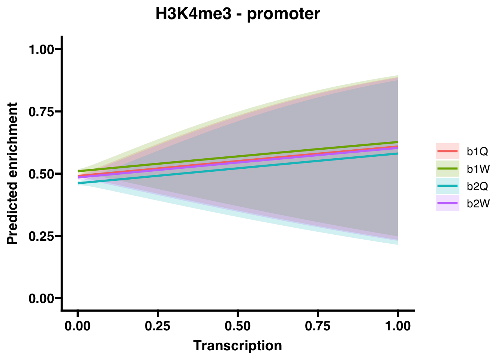

S6 HPTM-transcription dynamics
6.1 H3K27me3
6.1.1 Gene bodies
##
## Call:
## glm(formula = H3K27me3_GB ~ Transcription + Group, family = "binomial",
## data = corrdat, na.action = na.exclude)
##
## Coefficients:
## Estimate Std. Error z value Pr(>|z|)
## (Intercept) 0.23129 0.01836 12.601 <2e-16 ***
## Transcription 1.51770 0.94366 1.608 0.108
## Groupb1W -0.48790 0.02589 -18.843 <2e-16 ***
## Groupb2Q -0.46453 0.02586 -17.960 <2e-16 ***
## Groupb2W -0.53713 0.02593 -20.717 <2e-16 ***
## ---
## Signif. codes: 0 '***' 0.001 '**' 0.01 '*' 0.05 '.' 0.1 ' ' 1
##
## (Dispersion parameter for binomial family taken to be 1)
##
## Null deviance: 66993 on 48491 degrees of freedom
## Residual deviance: 66423 on 48487 degrees of freedom
## AIC: 66433
##
## Number of Fisher Scoring iterations: 3## OR 2.5 % 97.5 %
## (Intercept) 1.2602237 1.2157175 1.3064186
## Transcription 4.5617258 0.8228371 36.8689768
## Groupb1W 0.6139173 0.5835236 0.6458607
## Groupb2Q 0.6284289 0.5973503 0.6610918
## Groupb2W 0.5844257 0.5554530 0.61487426.1.2 Promoters
##
## Call:
## glm(formula = H3K27me3_P ~ Transcription + Group, family = "binomial",
## data = corrdat, na.action = na.exclude)
##
## Coefficients:
## Estimate Std. Error z value Pr(>|z|)
## (Intercept) -0.19268 0.01842 -10.46 <2e-16 ***
## Transcription -3.51111 1.53339 -2.29 0.022 *
## Groupb1W -0.43184 0.02643 -16.34 <2e-16 ***
## Groupb2Q -0.37462 0.02629 -14.25 <2e-16 ***
## Groupb2W -0.43267 0.02641 -16.38 <2e-16 ***
## ---
## Signif. codes: 0 '***' 0.001 '**' 0.01 '*' 0.05 '.' 0.1 ' ' 1
##
## (Dispersion parameter for binomial family taken to be 1)
##
## Null deviance: 64247 on 48491 degrees of freedom
## Residual deviance: 63863 on 48487 degrees of freedom
## AIC: 63873
##
## Number of Fisher Scoring iterations: 4## OR 2.5 % 97.5 %
## (Intercept) 0.82474921 0.795497195 0.8550560
## Transcription 0.02986382 0.001111175 0.4037698
## Groupb1W 0.64931138 0.616519170 0.6838102
## Groupb2Q 0.68755063 0.653002319 0.7238935
## Groupb2W 0.64877440 0.616031517 0.68322056.2 H3K27ac
6.2.1 Gene bodies
##
## Call:
## glm(formula = H3K27ac_GB ~ Transcription + Group, family = "binomial",
## data = corrdat, na.action = na.exclude)
##
## Coefficients:
## Estimate Std. Error z value Pr(>|z|)
## (Intercept) 0.26670 0.01852 14.403 < 2e-16 ***
## Transcription 5.84046 1.65205 3.535 0.000407 ***
## Groupb1W -0.22908 0.02585 -8.862 < 2e-16 ***
## Groupb2Q -0.42431 0.02586 -16.410 < 2e-16 ***
## Groupb2W -0.73402 0.02616 -28.057 < 2e-16 ***
## ---
## Signif. codes: 0 '***' 0.001 '**' 0.01 '*' 0.05 '.' 0.1 ' ' 1
##
## (Dispersion parameter for binomial family taken to be 1)
##
## Null deviance: 67163 on 48491 degrees of freedom
## Residual deviance: 66279 on 48487 degrees of freedom
## AIC: 66289
##
## Number of Fisher Scoring iterations: 4## OR 2.5 % 97.5 %
## (Intercept) 1.3056481 1.2591417 1.353938e+00
## Transcription 343.9371567 17.1230492 1.030419e+04
## Groupb1W 0.7952628 0.7559666 8.365813e-01
## Groupb2Q 0.6542232 0.6218807 6.882166e-01
## Groupb2W 0.4799744 0.4559652 5.052074e-016.2.2 Promoters
##
## Call:
## glm(formula = H3K27ac_P ~ Transcription + Group, family = "binomial",
## data = corrdat, na.action = na.exclude)
##
## Coefficients:
## Estimate Std. Error z value Pr(>|z|)
## (Intercept) -0.12083 0.01825 -6.620 3.59e-11 ***
## Transcription 0.63365 0.83094 0.763 0.44571
## Groupb1W -0.08052 0.02579 -3.123 0.00179 **
## Groupb2Q -0.32665 0.02604 -12.546 < 2e-16 ***
## Groupb2W -0.58884 0.02654 -22.187 < 2e-16 ***
## ---
## Signif. codes: 0 '***' 0.001 '**' 0.01 '*' 0.05 '.' 0.1 ' ' 1
##
## (Dispersion parameter for binomial family taken to be 1)
##
## Null deviance: 65645 on 48491 degrees of freedom
## Residual deviance: 65037 on 48487 degrees of freedom
## AIC: 65047
##
## Number of Fisher Scoring iterations: 4## OR 2.5 % 97.5 %
## (Intercept) 0.8861842 0.8550308 0.9184490
## Transcription 1.8844851 0.3607992 10.4949961
## Groupb1W 0.9226399 0.8771650 0.9704639
## Groupb2Q 0.7213345 0.6854346 0.7590862
## Groupb2W 0.5549713 0.5268214 0.5845819
6.3 H3K4me3
6.3.1 Gene bodies
##
## Call:
## glm(formula = H3K4me3_GB ~ Transcription + Group, family = "binomial",
## data = corrdat, na.action = na.exclude)
##
## Coefficients:
## Estimate Std. Error z value Pr(>|z|)
## (Intercept) 0.34155 0.01865 18.311 < 2e-16 ***
## Transcription 6.90333 1.80531 3.824 0.000131 ***
## Groupb1W -0.06428 0.02606 -2.467 0.013629 *
## Groupb2Q -0.31405 0.02590 -12.125 < 2e-16 ***
## Groupb2W -0.27871 0.02591 -10.758 < 2e-16 ***
## ---
## Signif. codes: 0 '***' 0.001 '**' 0.01 '*' 0.05 '.' 0.1 ' ' 1
##
## (Dispersion parameter for binomial family taken to be 1)
##
## Null deviance: 66811 on 48491 degrees of freedom
## Residual deviance: 66571 on 48487 degrees of freedom
## AIC: 66581
##
## Number of Fisher Scoring iterations: 4## OR 2.5 % 97.5 %
## (Intercept) 1.4071244 1.3566526 1.459570e+00
## Transcription 995.5844895 35.2006129 3.996824e+04
## Groupb1W 0.9377424 0.8910494 9.868753e-01
## Groupb2Q 0.7304846 0.6943134 7.685136e-01
## Groupb2W 0.7567564 0.7192760 7.961652e-01
6.3.2 Promoters
##
## Call:
## glm(formula = H3K4me3_P ~ Transcription + Group, family = "binomial",
## data = corrdat, na.action = na.exclude)
##
## Coefficients:
## Estimate Std. Error z value Pr(>|z|)
## (Intercept) -0.03695 0.01822 -2.028 0.04259 *
## Transcription 0.47954 0.83142 0.577 0.56410
## Groupb1W 0.07629 0.02570 2.968 0.00299 **
## Groupb2Q -0.11694 0.02573 -4.545 5.5e-06 ***
## Groupb2W -0.02362 0.02570 -0.919 0.35799
## ---
## Signif. codes: 0 '***' 0.001 '**' 0.01 '*' 0.05 '.' 0.1 ' ' 1
##
## (Dispersion parameter for binomial family taken to be 1)
##
## Null deviance: 67191 on 48491 degrees of freedom
## Residual deviance: 67133 on 48487 degrees of freedom
## AIC: 67143
##
## Number of Fisher Scoring iterations: 3## OR 2.5 % 97.5 %
## (Intercept) 0.9637236 0.9299061 0.9987623
## Transcription 1.6153293 0.3176644 9.2686175
## Groupb1W 1.0792787 1.0262594 1.1350464
## Groupb2Q 0.8896384 0.8458808 0.9356480
## Groupb2W 0.9766554 0.9286808 1.0271056